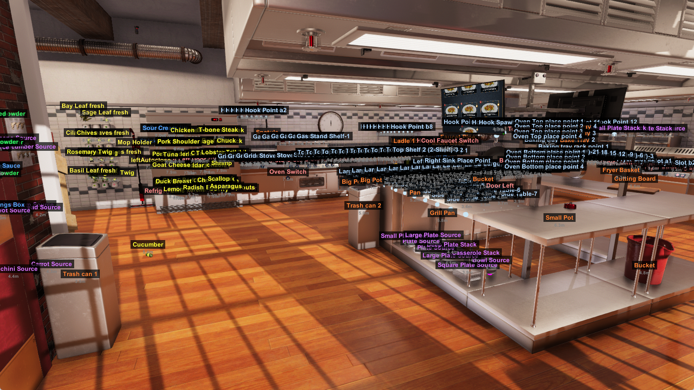
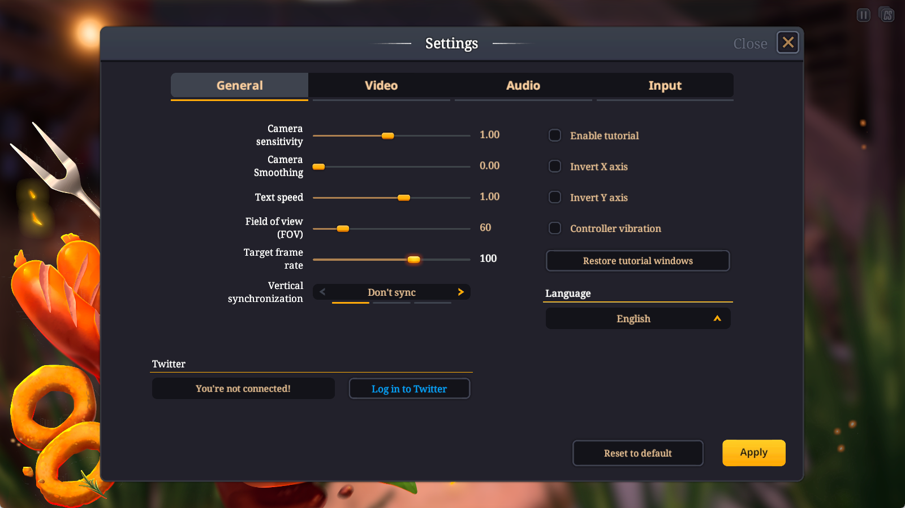
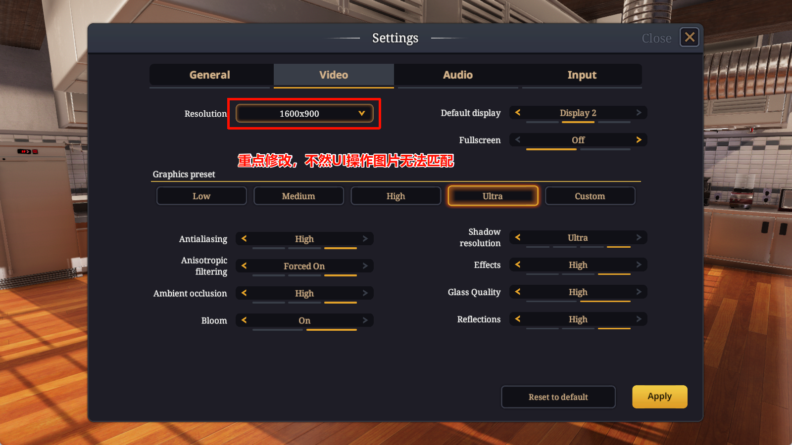
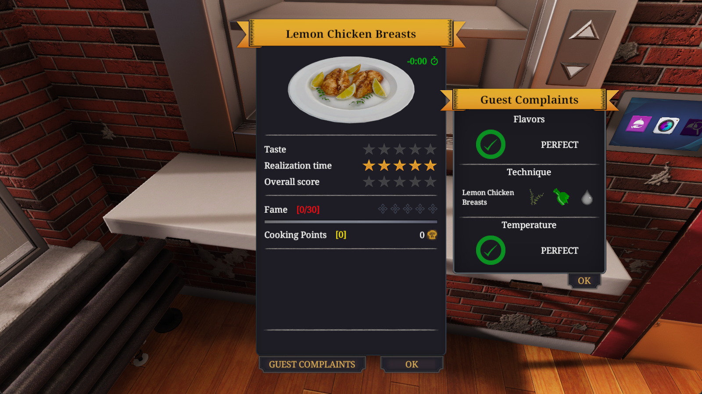

Inspectable setup
Concrete prerequisites, file destinations, versioned integration files, verification controls, and runtime settings are listed below.
Anonymous supplementary material
A public, step-by-step record of the Windows environment integration, run workflow, and release boundaries used for CookBench.
Concrete prerequisites, file destinations, versioned integration files, verification controls, and runtime settings are listed below.
The page records how to create a local environment, run an episode, resume an interrupted episode, and collect evaluation feedback.
Original benchmark artifacts are separable from commercial game assets, external model APIs, and user-owned credentials.
| Artifact | Availability / boundary |
|---|---|
| Environment-integration package | Included on this page: the integration binary and name-mapping files needed for the documented game-side setup. |
| Benchmark code and experiment artifacts | Publish in the accompanying anonymous code artifact: task definitions, prompts, action interface, EPM/world-adapter code, evaluation scripts, and permitted logs. |
| Cooking Simulator and Food Network DLC | Commercial dependencies. Each reproducer obtains these separately from the official distributor; they are not redistributed here. |
| Closed or hosted model APIs | External services. Reproduction requires the stated model identifier and access available to the reproducer; no API key is included or requested by this page. |
Download environment-integration capsule Download CS_CamDump.dll directly
Integration version: 20260430.1906. SHA-256 checksums are included in SHA256SUMS.txt inside the download.
The accompanying public anonymous artifact repository contains this reproducibility capsule. It intentionally contains no personal profile link, private URL, credential, or identifying commit history.
Windows with a primary display configured at 100% scaling. Place the game window on the primary display for consistent screen capture.
Cooking Simulator plus Food Network DLC, installed through the official distributor. Use a local Sandbox session in the Classic kitchen scene.
Python 3.10 with Conda; an editor such as VS Code is optional. Install MelonLoader version 0.5.7 from the official source.
CS_CamDump.dll to <Cooking Simulator>/Mods/. Copy item_name_mapping.txt and object_en_ch_mapping.txt to <Cooking Simulator>/UserData/.F12 to toggle real-time object monitoring, and press F10 to toggle the text overlay. The on-screen overlay confirms that the game-side component is loaded.



conda create -n cookbench python=3.10
conda activate cookbench
# Run from the repository root (the parent directory of epm/)
pip install -e ./epmUse local-only configuration templates (for example, common.local.example.json copied to common.local.json) for machine-specific paths and service credentials. Local configuration files must stay untracked. This page never embeds API keys, email passwords, or private endpoint URLs.
The following commands illustrate the published runner interface. The accompanying anonymous code artifact should pin the exact configuration files, model identifiers, prompts, and evaluation revision used for a result.
# One dish with a selected agent configuration
python epm/scripts/run_episode_dashboard.py \
--config epm/configs/pipelines/planner_executor.json \
--dish-id 1
# Resume the most recent compatible run and refresh its memory state
python epm/scripts/run_episode_dashboard.py \
--config epm/configs/pipelines/planner_executor.json \
--dish-id 1 --resume --refresh-memory
# Run a specified batch sequentially
python epm/scripts/run_episode_dashboard.py \
--config epm/configs/pipelines/reflexion.json \
--dish-range 1-20,41-60 --auto-chainEach run should retain its trajectory, screenshots/logs, configuration snapshot, evaluation output, and timing information in its run directory. If an episode reaches the game evaluation interface but feedback was not recorded, capture the feedback with the released collection script and verify that the dish identifier matches the evaluated dish.
Record OS, game version/DLC, loader version, integration-package checksum, screen scaling, configuration revision, and model/provider access date.
Save the dish ID, framework/configuration, prompt-ablation choice if applicable, trajectory, runtime log, screenshot evidence, and evaluation output.
Separate released author-created artifacts from commercial simulator dependencies and external model APIs. Report provider defaults and unresolved randomness rather than implying deterministic replay.